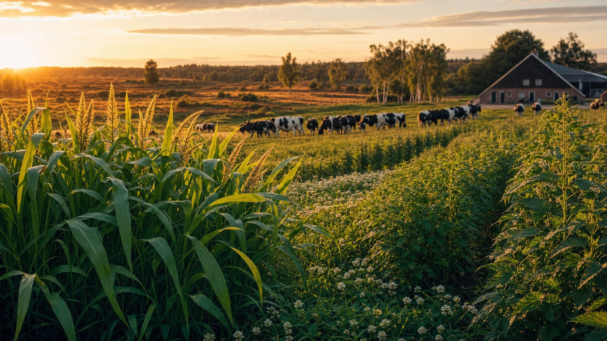

Advancing both the farmer and nature
From "fewer cows means less income" to four scenarios — including the radical cow-free buffer zone that gives Natura 2000 fifteen years to breathe. With cost-benefit table per hectare per year.
By Jacobus van Merksteijn · Palma, Mallorca · 9 July 2026 · extended version

On 9 July 2026, the FD opens with an analysis that asks exactly the question on which the nitrogen policy is stalling. "Fewer cows means less income," concludes agricultural economist Roel Jongeneel from Wageningen. The manure norm of 2.6 cows per hectare costs three-quarters of farmers nothing, but 3,500 businesses — primarily in Noord-Brabant, around Eindhoven, on the sandy soils at the edge of the Natura 2000 areas — must choose between buying additional land, getting rid of cows, or signing a manure contract with the arable farmer down the road. The cabinet is putting € 215 million on the table to cushion that blow. And the farming lobby is on high alert again. What the FD fails to consider in any paragraph: in those exact same buffer zones, two other options are ready. One is a mixed intermediate form — three plants on fifteen percent of the plot, the same cows in the barn. The other is a radical choice — fifteen years of completely cow-free buffer zone, two cuts per year, one long-term off-take contract. This article calculates both, and puts the business plan below the bottom line.
Part I — The question the FD is asking
Jongeneel summarises the problem dryly: "The Netherlands is a relatively small player in the total EU market. Our share is 9%. A lower supply from our side does not cause the price to rise across the Union. It really is fewer cows, less income."
That is an honest analysis and a devastating one at that. The cabinet has no answer to the simplest farming question there is — how do you compensate a forced drop in income for a family business that has often worked the same land for three generations? The € 215 million is a paltry tip for a farming population that has 130,000 cows too many and 50,000 hectares of land too few. Spread across 3,500 businesses, that is slightly more than € 60,000 per business to adapt over nine years. For the purchase of one hectare of agricultural land in Noord-Brabant, where the price according to the FD stands at € 120,400 and goes towards € 206,400 in the Peel, that is insufficient for half a hectare.
The farmer therefore has roughly three options, according to the FD: buying additional land, getting rid of cows, or signing a cooperation agreement with arable farmers to dispose of his manure. All three options boil down to contraction or dependency. Not a single option for growth.
We propose two other options. And they are not theoretical.
Part II — Option 3: mixed farm with three plants on fifteen percent
What the FD map does not look at
The blue-green colour on the FD map — 3,500 farming businesses above the 2.6 norm — overlaps almost one-on-one with the sandy soils and peat meadows at the edge of the most important Natura 2000 areas. Southern Netherlands into the Peel. The Achterhoek. Het Drents-Friese Wold. De Gelderse Vallei. These are precisely the plots that are called "vulnerable" according to the habitats directive, and at the same time the plots that offer the most favourable microclimate conditions for the cold-tolerant, improved North-West European variant of Giant Juncao — emphatically not the tropical Amazon form that does not survive the winter here, but the cold variant selected over the last three years on Malta and Mallorca by Carbon-Alert Ltd, supplemented with white clover for nitrogen fixation and stinging nettle for protein density.
The farmer sitting around Eindhoven today with 3.1 cows per hectare has two practical scenarios before him in this scenario. The first is: getting rid of a quarter of his livestock to come out below 2.6. Mathematically, a € 250,000 to € 500,000 loss in turnover, compensated with a fraction of that from the € 215 million cabinet pot. The second scenario — which we describe as Option 3 — is: keeping the same cows, and growing the three plants on fifteen to thirty percent of his hectares, taking a mobile Tier 1 unit onto the plot to make hydrolysaat from it, and feeding that hydrolysaat back in his own barn as a full-fledged protein ration. The cow receives more protein from own land than from soy from Rotterdam. He emits thirty percent less nitrogen and ten to fifteen percent less methane. Manure disposal is halved.
The yield per hectare — in figures
On an average Brabant dairy farm of forty hectares with 125 cows, Option 3 works out as follows:
| Item per farm (40 ha, 125 cows) | Scenario A getting rid of cows | Option 3 Carbon-Alert on 6 ha |
|---|---|---|
| Number of cows | 104 (−21) | 125 (unchanged) |
| Revenue effect milk | −€ 35.000 | € 0 |
| Concentrate feed substitution (soy → hydrolysaat) | € 0 | +€ 27.000 |
| Manure disposal reduction | € 0 | +€ 8.000 |
| Synthetic fertiliser reduction on 34 ha (clover-N) | € 0 | +€ 9.000 |
| Depreciation mobile unit (shared among 5 farms) | € 0 | −€ 12.000 |
| Cabinet compensation from € 215 mln pot | +€ 6.700/yr | € 0 |
| Net structural effect on farm income | −€ 28.000/yr | +€ 32.000/yr |
| Ammonia deposition in adjacent Natura 2000 | −17% | −30% |
| Methane emissions per litre of milk | equal | −10 to −15% |
| Biodiversity on plot | equal | significantly positive |
Between scenario A and Option 3 lies a difference of € 60.000 per year per farm, in favour of Option 3. Multiplied by the 3.500 farms mentioned by the FD: € 210 million per year structurally — the entire cabinet compensation package, year after year, out of the farmer's own pocket.
Part III — Option 4: the cow-free buffer zone, fifteen years
Option 3 is the compromise variant. It keeps the cow in the barn and the plant on the edge plot. For many farmers, that is the right choice. But there is a more radical option possible on exactly the same buffer zone plots, which produces a number of effects that Option 3 cannot deliver. We call this Option 4: the cow-free buffer zone, for fifteen years, two cuts per year, one long-term supply contract.
Why fifteen years, and not three or fifty
Buffer zones have existed on the Dutch map for years. What they have never had is a time limit. The farmer who is currently in the buffer zone hears from the cabinet that "for the time being" less is allowed — and interprets that, correctly, as "forever". That is the reason why every buffer zone discussion degenerates into an existential argument within thirty seconds. It is never a temporary measure. It is always an expropriation.
Fifteen years is different. Fifteen years is one generational change on the farm. Fifteen years is exactly the period in which the root mass of Giant Juncao — one to one and a half metres deep — structurally restores the soil, in which acidified sandy soils regain their buffering through continuous clover nitrogen fixation, in which the soil life of an exhausted dairy plot returns to a level that the Dutch hectare still had in 1960. And fifteen years is exactly long enough to bring the ammonia deposition in the adjacent Natura 2000 area from "critically exceeded" to "below KDW norm", after which the area — for the first time since the 1992 habitats directive — can maintain itself again.
After those fifteen years, the farmer has a choice. He can extend, or return to a mixed cycle with a significantly reduced number of cows on what is then effectively "new land", or continue with permanent Carbon-Alert cultivation.
What happens in May and September
On the cow-free buffer zone grows a polyculture of three plants that strengthen each other in time and space. In March the clover wakes up first: a dense ground cover that binds between ten and twenty kilograms of atmospheric nitrogen per hectare per year. In May — before the first clover flowering — comes the first cut: twelve to fifteen ton dry matter per hectare. Between June and August the crop recovers, and the clover blooms in two waves; peaks of more than twenty thousand bee visits per day per hectare have been measured in Wageningen. The stinging nettle hosts the caterpillars of at least forty native butterfly and moth species. In September — after the second clover flowering — comes the second cut: eighteen to twenty-five ton dry matter. Added together: thirty to forty ton dry matter per hectare per year. Between October and February the plot lies harvested but not empty: skylark, meadow pipit, redwing and fieldfare find cover and seed fall. Two cuts. For fifteen years. No fertilisation, no pesticides, no ploughing.
Where the biomass goes
The thirty to forty tons of dry matter per hectare per year leave the plot via three possible off-take channels:
| Off-take channel | Gross per hectare per year | Off-taker |
|---|---|---|
| High-quality animal feed (16–20% crude protein, alfalfa-level) | € 4.500 to € 6.000 | ForFarmers, De Heus, Agrifirm — long-term contract |
| Cellulosic ethanol (220–340 L per ton dry matter) | € 5.000 to € 7.200 | 2nd-generation plant Rotterdam/Amsterdam |
| Methanol / mixed biofuels (450 kg/ton d.m.) | € 3.000 to € 5.000 | Regional Fischer-Tropsch cluster |
After deducting machinery costs (mowing, chopping, transport for two cuts: € 600 to € 900 per hectare) and management costs (€ 200 per hectare), the farmer retains net € 2.500 to € 5.900 per hectare per year in biomass income. And on top of that comes the earnings from the CO₂ credits.
The CO₂ balance of fifteen years of cow-free buffer zone
For one hectare of cow-free buffer zone, over fifteen years, compared to the same hectare as conventional dairy farmland with 2,6 cows:
| Removed emissions per hectare per year | ton CO₂-eq |
|---|---|
| Methane from 2,6 cows (286 kg CH₄ × GWP-100 28) | 8,0 |
| Nitrous oxide from manure and synthetic fertiliser (3,5 kg N₂O × GWP-100 265) | 0,93 |
| Synthetic fertiliser production via Haber-Bosch (180 kg N × 4,0 kg CO₂/kg) | 0,72 |
| Concentrate feed import (soy Zuid-Amerika, 2,6 × 700 kg × 0,8 kg CO₂) | 1,5 |
| Avoided emissions | 11,2 |
| Root mass Giant Juncao (1,5 m deep, permanent, 60% retention) | 4,0 to 5,9 |
| Soil organic matter (SOM build-up through no-tilling) | 1,1 to 1,8 |
| Ethanol replaces petrol (if off-take channel 2) | 5 to 8 |
| Added sequestration + fossil replacement | 10 to 16 |
| Total CO₂ balance per hectare per year | 21 to 27 |
Over fifteen years cumulative: 315 to 405 tons of CO₂ equivalent per hectare. On one hundred thousand hectares of Dutch cow-free buffer zone: 31 to 41 million tons of CO₂ equivalent over fifteen years — roughly a quarter of the Dutch annual emissions. At an EUA price of € 85 per ton: € 2,6 to € 3,5 billion in tradable CO₂ credits over fifteen years, or € 1.800 to € 2.300 per hectare per year extra gross for the farmer, provided the BiCRS portion is verified via EU-ETS.
That brings the total net yield to € 4.300 to € 8.200 per hectare per year — virtually equal to or higher than the € 7.000 to € 7.500 margin that the same hectare as full dairy farmland yielded. Without labour. Without concentrate feed. Without manure disposal. Without nitrogen penalty. And with fifteen years of contract security.
What nature looks like after fifteen years
Year one to three: the degassing. The top layer rids itself of decades of nutrient surplus; the crops remove phosphate, nitrogen, and potassium via the cuts.
Year three to seven: the soil reversal. Soil pH stabilises, mycorrhizal fungi return, earthworm populations increase from twenty to thirty individuals per square metre to two hundred to three hundred — values that have become rare on Dutch soil since the 1960s.
Year seven to twelve: the fauna explosion. Butterfly richness reaches twenty-five to forty species per hectare compared to three to six on intensive dairy farmland. Skylark, grey partridge, yellow wagtail, and meadow pipit return.
Year twelve to fifteen: the corridor formation. The cow-free buffer zones around all Natura 2000 areas will connect with each other. For the first time since the land consolidation, the Netherlands will have a network of ecological connection routes that was not devised on a drawing board but has grown in practice.
And the adjacent Natura 2000 area gets fifteen years without ammonia deposition. The KDW norm is structurally undercut in almost every area within seven to ten years. The legal basis for "critically exceeded" disappears. Permit procedures elsewhere in the Netherlands get moving again.
Part IV — What "both the farmer and nature moving forward" concretely means
The discussion in the Netherlands has been systematically polarised over the past ten years into a choice between two groups: the farmer who wants to keep his business, and nature conservation which wants to maintain the habitat standard. Every coalition agreement, every Rabobank analysis, every protest action on the Malieveld concerns the question of who wins and who loses.
What Option 3 and Option 4 together demonstrate is that this dichotomy is a political construct, not a biological one. There are architectures that win on both sides. Option 3 does this by keeping the cow and adding the plant. Option 4 does this by letting the plant reclaim the plot for fifteen years and keeping the cow elsewhere in the cycle. Both are valid, and the choice between the two lies with the farmer — not the cabinet.
The taxpayer wins in both scenarios. In Option 3, the € 215 million does not have to go towards buyouts but towards investment in mobile units. In Option 4, the full national cow-free buffer zone program of one hundred thousand hectares over fifteen years costs approximately € 1,17 billion for implementation, transition compensation, mobile processing clusters, and monitoring — 5,9 percent of the € 20 billion that the cabinet wants to spend on buffer zone buyouts.
Business plan — costs and revenues per scenario
Under the line, per hectare per year, in constant 2026 euros. All amounts are net for the farmer after deduction of machine and management costs, excluding labour.
Per hectare per year — four scenarios
| Option 1 current dairy cattle | Scenario A getting rid of cows | Option 3 mixed 15% CA cultivation | Option 4 cow-free 15 years | |
|---|---|---|---|---|
| Milk yield | € 9.900 | € 7.400 | € 9.900 | € 0 |
| Concentrate feed | −€ 1.800 | −€ 1.350 | −€ 900 | € 0 |
| Manure disposal | −€ 700 | −€ 560 | −€ 350 | € 0 |
| Synthetic fertiliser | −€ 300 | −€ 240 | € 0 | € 0 |
| Biomass sale (thirty to forty tons dry matter) | € 0 | € 0 | +€ 4.500 | +€ 4.500 to +€ 7.200 |
| Machine costs (mowing + transport) | € 0 | € 0 | −€ 400 | −€ 900 |
| Management / contract | € 0 | € 0 | −€ 200 | −€ 200 |
| CO₂ credit (BiCRS via EU-ETS) | € 0 | € 0 | +€ 400 | +€ 1.800 to +€ 2.300 |
| Cabinet compensation (spread over 9 yrs) | € 0 | +€ 170 | € 0 | +€ 500 (year 1–3) |
| Net per hectare per year | € 7.100 | € 5.420 | € 13.350 | € 5.700 to € 8.400 |
| Working hours per hectare per year | 180 | 150 | 185 | 18 |
| Contract security | year on year | year on year | 5 to 10 years | 15 years fixed |
At farm level — 40 hectare / 125 cows
| Scenario A | Option 3 6 ha CA cultivation | Option 4 10 ha cow-free | |
|---|---|---|---|
| Net structural effect on farmer income per year | −€ 28.000 | +€ 32.000 | +€ 14.000 to +€ 22.000 |
| Ammonia deposition adjacent Natura 2000 | −17% | −30% | −100% on 10 ha, KDW back within 7–10 yrs |
| Methane emissions farm | −17% | −12% | −25% |
| CO₂ sequestration cumulative 15 years | 0 | approx. 240 tons | 3.150 to 4.050 tons |
| Biodiversity | unchanged | positive on 6 ha | corridor on 10 ha |
On a national scale — 100,000 hectare buffer zone, 15 year horizon
| Taxpayer investment item | Option 4 total |
|---|---|
| Seed and establishment (one-off, € 1.200/ha) | € 120 mln |
| Transition allowance year 1–3 (€ 2.000/ha × 3 yrs) | € 600 mln |
| Cluster of mobile Tier 1 processing units (200 × € 1,5 mln) | € 300 mln |
| Monitoring, verification, CO₂ credit administration (15 yrs) | € 150 mln |
| Total taxpayer costs | € 1,17 bn |
| For comparison: € 20 bn planned buffer zone buyout = 17× more expensive for a worse result | |
What the taxpayer gets in return
- 31 to 41 million tons CO₂-equivalent removed from the atmosphere over 15 years (market value at € 85/ton: € 2,6 to € 3,5 bn)
- Dutch protein independence for one third to half of soy imports (€ 400 to € 600 mln import substitution per year)
- 4 to 6 billion litres of cellulose ethanol or methanol per year nationally — strategic biofuel base
- Restoration of the KDW norm in all adjacent Natura 2000 areas within 7 to 10 years → permitting procedures elsewhere will become unstuck again
- Keeping the farmer on his own land with long-term contract security instead of buyout
- Biodiversity restoration unparalleled in Dutch post-war history
Payback period for the taxpayer: 4 to 6 years based on CO₂ credit revenues alone. All other benefits are on top of that.
Part V — The question politics must now ask
In July 2026, the Jetten cabinet has four major agricultural and nature dossiers open simultaneously: the manure norm of 2.6 cows per hectare, the buffer zones up to five hundred or a thousand meters around Natura 2000, the € 20 billion buyout budget, and the current Lbv program which, according to ESB, costs € 212,795 per kilogram of nitrogen removed from Natura 2000. Four dossiers, four problem definitions, four budget items. Not a single dossier solves the next one — they merely pile up against the farmer.
What we describe in this article is one architecture that solves all four dossiers simultaneously. Not with more subsidies. Not with more buyouts. Not with more relocation. But with three plants, two cuts per year, one long-term purchase contract, and fifteen years of patience.
The defining decision is not the € 215 million being presented to the Dutch parliament on Friday. The defining decision is whether the cabinet is willing — for one percent of that same € 215 million — to finance a real pilot on fifteen Dutch dairy farms in the most heavily affected buffer zones. Fifteen farms, six to ten hectares per farm, shared mobile Tier 1 unit, measurement program at Dairy Campus and Louis Bolk. Total budget: two to three million euros. Payback period for the farmer: three to four years. Political risk for the minister: negligible. Political risk of non-implementation: the next Malieveld.
The farmer does not have three options, as the FD assumes. He has four. And the fourth — the cow-free buffer zone, fifteen years — is the one that solves the entire nitrogen problem, the entire methane problem, the entire soy import problem, and the entire farm income problem in one architecture. For 5.9 percent of the buffer zone budget.
The cow waits. The clover waits. The stinging nettle waits. The manure norm is coming. The question is which of the four politics will allow to take priority.
- Send the politicians to nature school first — 5 July 2026, about the buffer zones and why the Habitats Directive is overshooting its mark
- They are killing their lifeblood — about the € 212.795 per kilogram buyout
- Three problems, one answer — the Carbon-Alert NL architecture in detail
News source: Het Financieele Dagblad, 9 July 2026, "What does a livestock norm do for the farmer? 'Fewer cows means less income'", by Nika Buijs and Bauke Schram.

Jacobus van Merksteijn
Malta
Publisher of Het Open Vizier. Systems thinker on climate, energy and democracy.